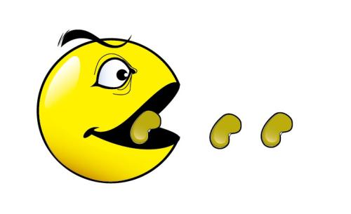

12.2 CSS3提供的Transition动画
CSS3提供了Transition动画支持，Transition动画可以控制HTML组件的某个属性发生改变时会经历一段时间、以平滑渐变的方式
发生改变，这就产生了动画效果。
Transition动画通过transition属性来指定。transition属性的值包括如下4个部分propertity duration time-function delay：
- transition-propertity:指定对HTML元素的哪个CSS属性进行平滑渐变处理。该属性可以指定background-color、width、heigth、
等各种标准的CSS属性。
- transition-duration:指定属性平滑渐变的持续时间。
- transition-timing-function:指定渐变的速度，该部分支持如下几个值：
- ease:动画开始时较慢，然后速度加快，到达最大速度时在减慢速度。
- linear:线性速度。动画开始时的速度到结束时的速度保持不变。
- ease-in:动画开始速度较慢，然后速度加快。
- ease-out:动画开始时速度很快，然后速度减慢。
- ease-in-out：动画开始时速度较慢，然后速度加快，到达最大速度后再减慢速度。
- cubic-bezier（x1,y1,x2,y2）:通过贝济埃曲线来控制动画的速度。该属性值完全可以替代ease、linear、
ease-in、ease-out、ease-in-out等属性值。
- transition-delay:指定延迟时间，也就是指定经过多长时间的延迟才会开始执行平滑渐变。
以下是例子：
鼠标放进来时会发生颜色渐变,离开时会变回原来颜色。
12.2.1 多个属性同时渐变
transition属性可以同时指定多组propertity duration time-function delay 值，每组
property duration time-function delay值控制一个属性值的渐变效果。
例如，通过多个属性同时渐变可以非常方便的开发出动画效果。假如我们想实现一个在页面上随鼠标漂移的气球---控制气球移动主要是
修改气球图片的left、top两个属性值，让这两个属性值等于鼠标按下的X,Y坐标即可。如果再设置气球图片的left、top CSS属性不是
突然改变，而是以平滑渐变的方式来进行，这就是动画了，下面是例子：

12.2.2 指定动画速度
指定transition属性时可通过transition-timing-function设置属性变化的速度，这个值的本质是通过一条贝济埃曲线来控制目标属性的改变。